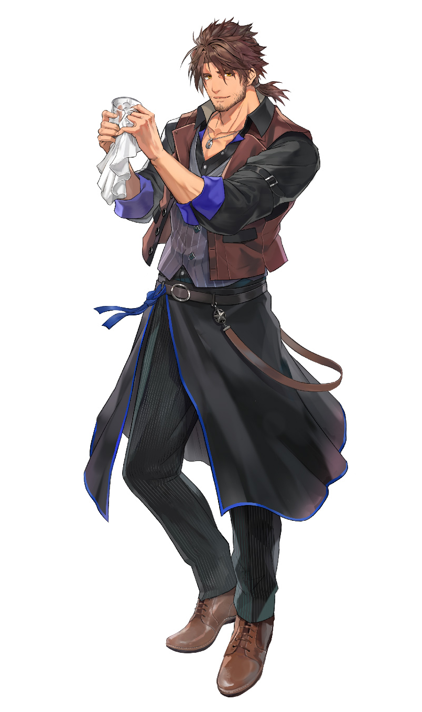

ダンディな見た目に渋い低音ボイスが魅力。 性格は気さくで、意外とお茶目な一面がある。 非常におおらかで寛容な性格をで人が良く、頼まれたことは基本的に断らない。 MARVELシリーズなどの洋画を、メタルギアソリッドを中心に様々なサブカルチャーに造詣がある。 主な活動スタイルはゲーム配信であり、ゲームの種類は特にこだわりがない。 が、ホラーゲームは苦手としており、実際プレイすると普段の様子とは打って変わって弱弱しくなってしまう。
『Minecraft』においてはダイヤモンドやエメラルドなどのレアな鉱石を発見する頻度が高く、 いつしか「ベルモンドが鉱石を掘り当てた瞬間に合わせてソシャゲ等のガチャを引くと当たる」といった風にリスナーに 担ぎ上げられ、「ベルモンド教」が誕生した。 彼自身も『Fate/Grand Order』など様々なゲームのガチャで高レアをすんなり引き当てるなど豪運エピソードに事欠かない。
また、3Dお披露目配信では華麗な側転を披露したり、ある配信では林檎を、またある配信ではメロンを素手で粉砕したりなど フィジカル面の強さも見せる。